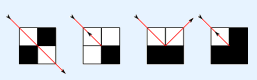

假设有一个n×m的网格。左上角的格子坐标是（1,1），右下角的格子坐标是（n,m）。网格中有k个堵塞的格子，其他的格子是空的。你在空格子（xs，ys）的中心向一个对角线方向（也就是东北，西北，东南，西南）发射一束激光。如果光束碰到堵塞的格子或网格边界，它会反射。在不同情况下光束的反射方式如下图所示。

过了一会儿，光束进入了一个无限的循环。计算至少被光束通过一次的空格子数。我们认为光束通过了一个格子的中心才算是通过了这个格子。
| F.A.Qs | Home | Discuss | ProblemSet | Status | Ranklist | Contest | 入门OJ | ModifyUser Xeonacid | Logout | 捐赠本站 |
|---|